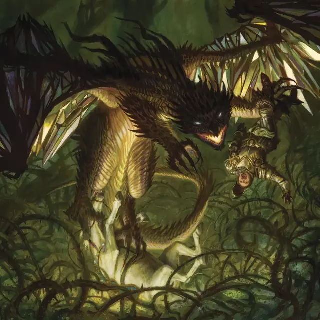

Колдовской дракон
Witchkite
Огромный Дракон (Колдун), хаотично-злой

Класс Доспеха 16 (природный доспех)
Хиты 220 (21к12 + 84)
Скорость 40 футов, летая 80 футов
| мод | спас | ||
|---|---|---|---|
| СИЛ | 23 | +6 | +6 |
| ЛОВ | 10 | +0 | +5 |
| ТЕЛ | 18 | +4 | +4 |
| мод | спас | ||
|---|---|---|---|
| ИНТ | 15 | +2 | +2 |
| МДР | 17 | +3 | +8 |
| ХАР | 19 | +4 | +9 |
Навыки Восприятие +8, Магия +7, Скрытность +5
Сопротивление урону огонь, психическая энергия
Чувства тёмное зрение 120 футов, пассивное Восприятие 18
Языки Драконий
Опасность 15 (13000 опыта)
Бонус мастерства +5
Особенности
Легендарное сопротивление (3/день). Если колдовской дракон проваливает спасбросок, вместо этого он может выбрать успех.
Действия
Мультиатака. Колдовской дракон совершает две атаки Раздиранием и один раз использует Злобную вспышку.
Раздирание. . Рукопашная атака оружием: +11 к попаданию, досягаемость 10 фт., одна цель. Попадание: 16 (3к6 + 6) рубящего урона.
Злобная вспышка. Колдовской дракон извергает магическое зеленоватое пламя в одно видимое им существо, находящееся в пределах дистанции 60 футов. Цель должна совершить спасбросок Ловкости Сл 17. При провале цель получает 22 (5к8) урона огнём и подвержена одному из следующих эффектов по выбору колдовского дракона:
• Цель должна использовать свою реакцию, чтобы совершить рукопашную атаку против другого существа по выбору колдовского дракон, находящегося в пределах досягаемости цели.
• Цель получает 13 (2к12) урона психической энергии
При успешном спасброске цель получает половину этого урона.
Использование заклинаний. Колдовской дракон может накладывать одно из следующих заклинаний, не требующих материальных компонентов и используя Харизму в качестве базовой характеристики для заклинания (Сл спасброска заклинания 17):
• Неограниченно: обнаружение магии [detect magic], малая иллюзия [minor illusion], разговор с мёртвыми [speak with dead];
• 1/день каждое: обнаружение мыслей [detect thoughts], переносящая дверь [dimension door], удержание чудовища [hold monster].
Реакции
Колдовской дракон может совершать до двух реакций за раунд, но только одну за ход.
Чарующий взгляд. Когда существо, которое видит колдовской дракон, перемещается в пределах 10 футов от него, колдовской дракон бросает на это существо чарующий взгляд. Существо должно преуспеть в спасброске Мудрости Сл 17, иначе получит 10 (3к6) урона психической энергией и станет очарованным до конца своего следующего хода.
Возмездие. Сразу после получения урона от рукопашной атаки, колдовской дракон совершает одну атаку Раздиранием по атакующему.
Описание
«Я слышал, что здесь живет особенно грозная ведьма. Или это был особенно жестокий дракон? Слухи были очень запутан-
— Последние слова почти забытого авантюриста Освала.
В то время как многие драконы Элдраина копят богатство и материальные блага, колдовские драконы предпочитают копить запретные и опасные магические секреты. Тайная природа сокровищ колдовского дракона просачивается в сущность дракона, наделяя его способностями к колдовству и превращая его огненное дыхание в злобные частицы магического пламени.
ДРАКОНЫ Элдраина
Драконы Элдраина во многом похожи на драконов других миров D&D. Для дракона Элдраина можно использовать любой блок статистики дракона. На Магических картах есть красные драконы (Меркантильный Дракон [Opportunistic Dragon], Декадентский дракон [Decadent Dragon] и Дракон из пламенного мира [Realm-Scorcher Hellkite]), бронзовые драконы (Озерный Дракон [Loch Dragon]) и драконы из лунного камня (Дракон Мерцания [Shimmer Dragon] и Дракон Архивов [Archive Dragon]). Луннокаменные драконы описаны в книге «Сокровищница драконов Физбана».